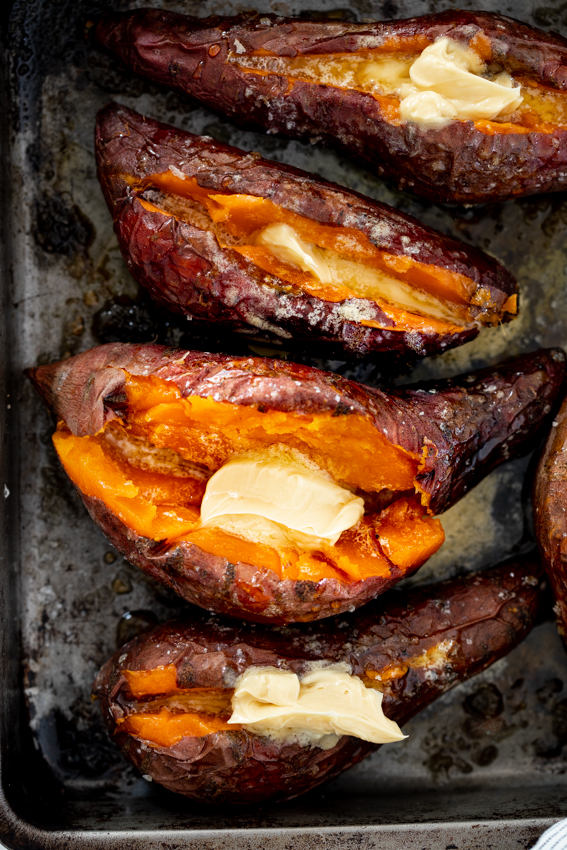

Sweet Potato

How to Make Elite Sweet Potatoes
This recipe is simple and requires very few ingridients.
The benefit to this method of baking sweet potatoes is that
it is fairly quick, simple, and very healthy. You will require an
air-fryer for this recipe.
Ingridients
- 1-2 Sweet Potatoes
- Butter
- Agave
Steps
- Grab two sweet potatoes and poke holes in each using a fork
- Put the sweet potatoes in the air-fryer
- Set the air-fryer temperature to 390 degrees fahrenheit and
set the timer to 35-minutes
- Start the air-fryer and wait for timer to complete
- Remove the sweet potatoes and cut in half
- Cut 1-2 tsps of butter and put into each potato
- Drizzle a generous amount of agave over each sweet potato
Home